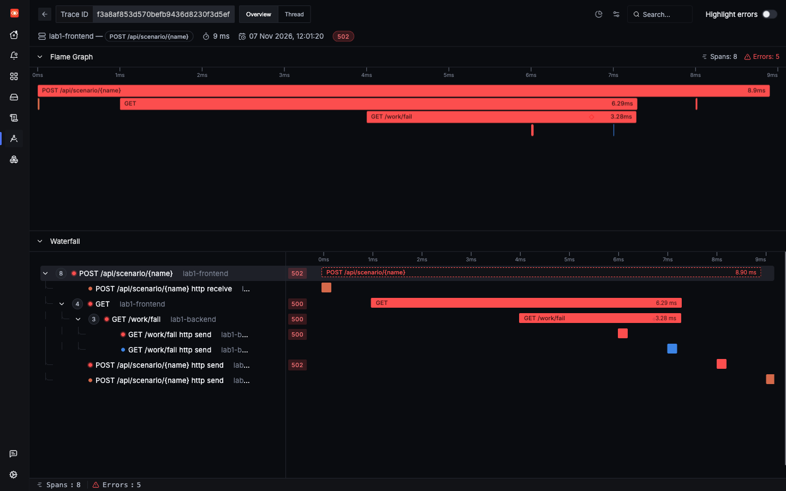
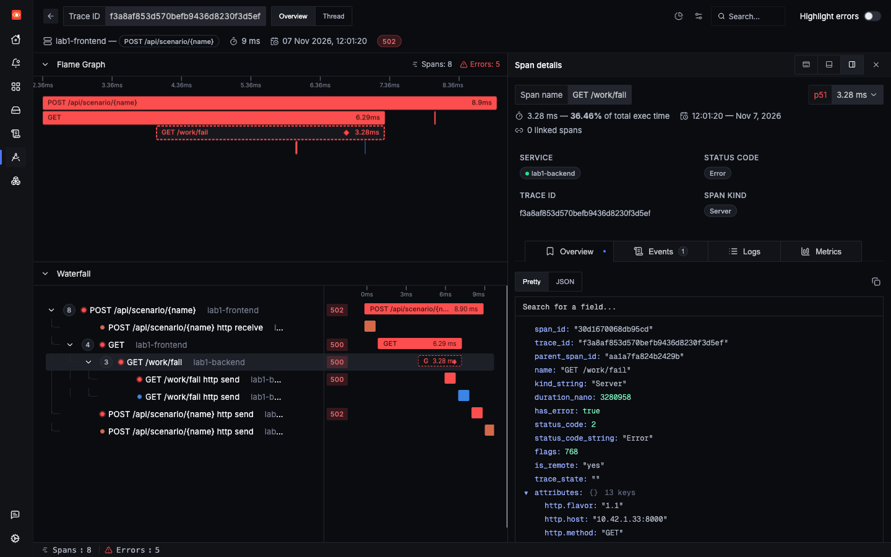
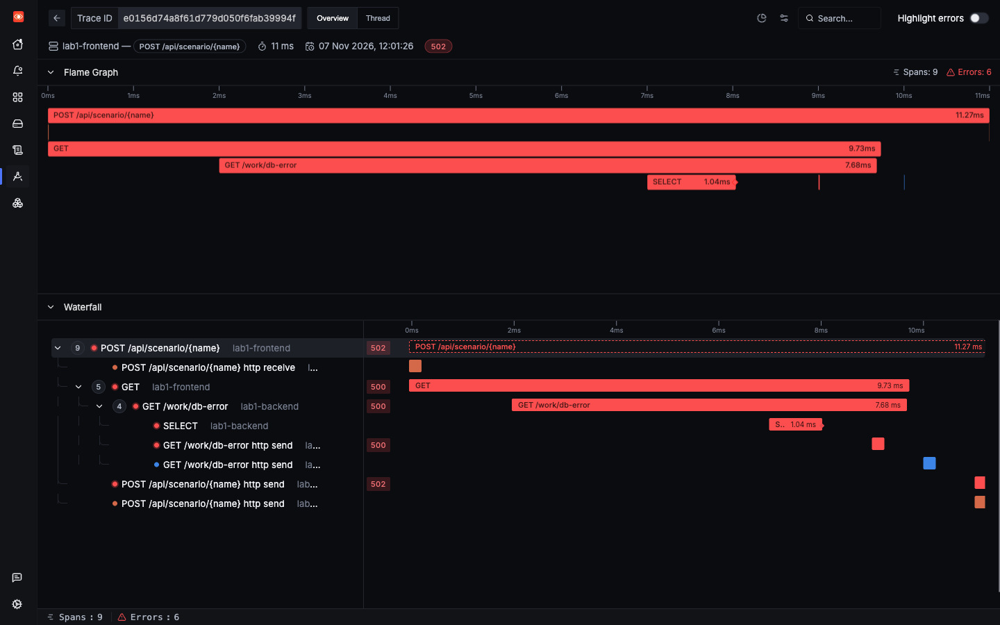
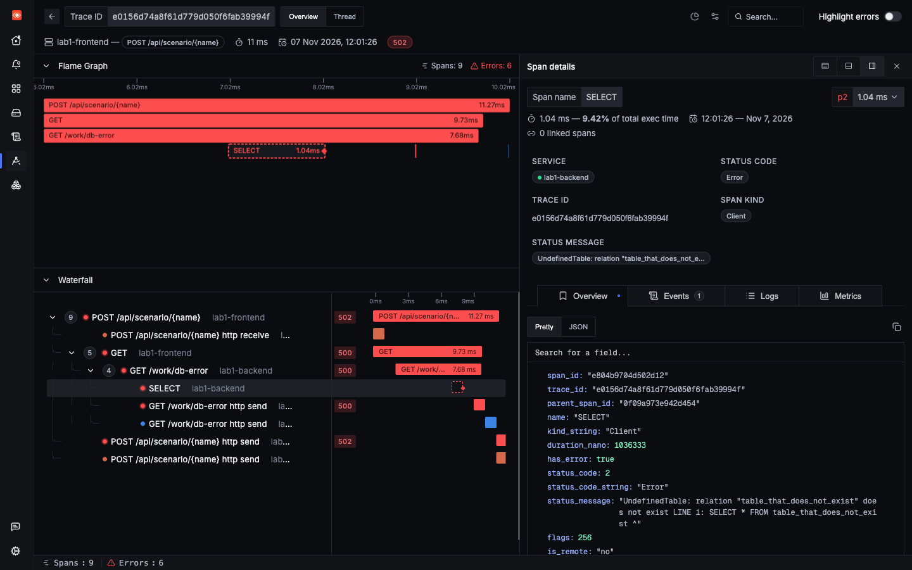
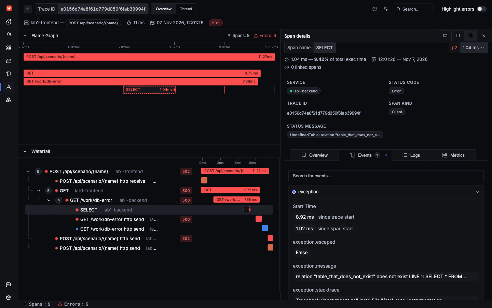
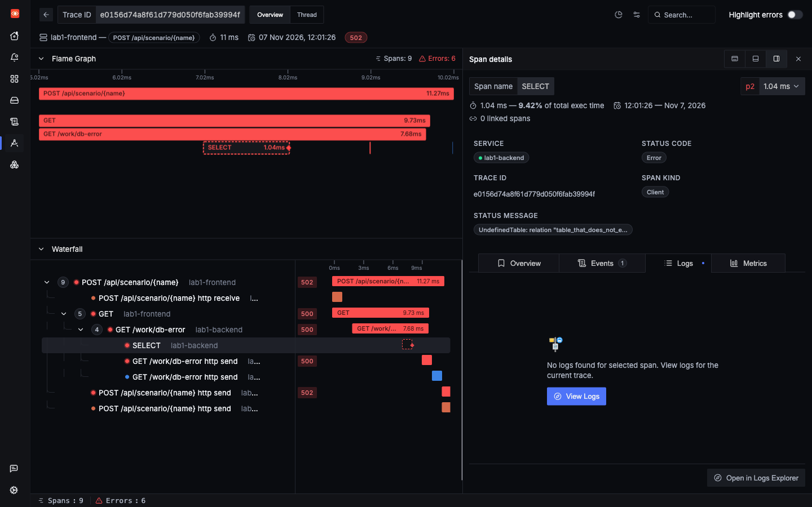
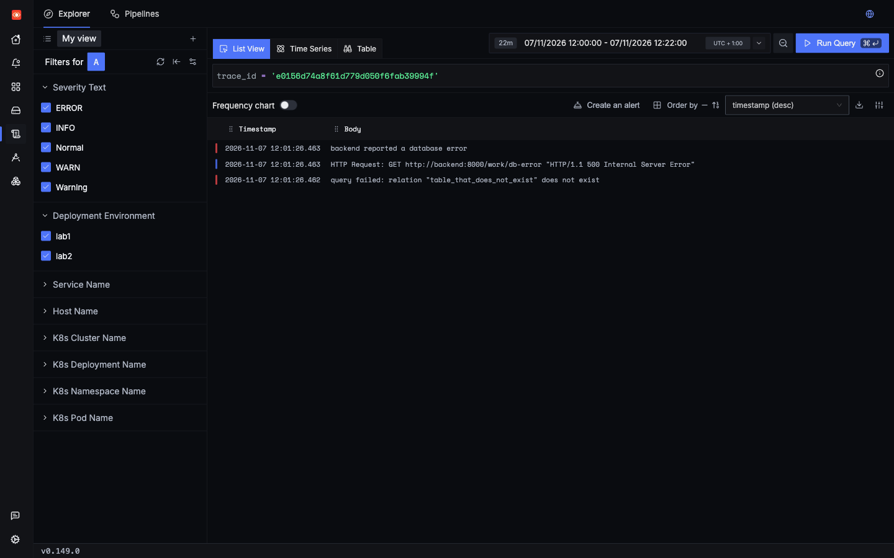

Lab 1: incident 3 of 6
A cross-service failure
The frontend returns a 502, but the frontend is not broken. This is where distributed tracing earns its keep: it follows the failure to the service that caused it.
1Trigger it
The backend_500 scenario makes the backend raise an unhandled exception, which the frontend turns into a 502.
2Symptom
The user sees a 502, in 15 ms in a saved run. The frontend's logs show only that the backend call failed:
backend call failed: Server error '500 Internal Server Error' for url 'http://backend:8000/work/fail'From inside the frontend, you can only say "something downstream broke". You need the backend's side.
3Where to look
- Open the trace for the failed request. One trace spans both services.
- Check Exceptions, which attributes each type to a service:
RuntimeErrorbelongs tolab1-backend. - Search spans by service in the Traces Explorer.
Do not depend on the Services page here. During this tutorial's load run it did not list lab1-backend at all. See gap 2. Traces and the Exceptions page are not affected.
4Search
5Evidence

http send spans carry the error too.
?spanId= to a trace URL to open a span directly.Three real spans have status Error, but they differ:
| Span | HTTP | Exception on span? | Meaning |
|---|---|---|---|
lab1-frontend Server POST /api/scenario/{name} | 502 | No | Reporting the failure to the user |
lab1-frontend Client GET | 500 | No | Received a failure from the backend |
lab1-backend Server GET /work/fail | 500 | RuntimeError | The origin |
The rule: errors bubble up through a trace. Walk down to the deepest failing span, and that is where to start. The exception event confirms it.
6Root cause
labs/lab1-hands-off/app/backend.py lines 119–121119@app.get("/work/fail")
120def fail() -> dict:
121 raise RuntimeError("backend exploded on purpose")The stack trace on the span points straight here: /app/backend.py, line 121, in fail. The frontend's job was to translate that into a 502:
labs/lab1-hands-off/app/frontend.py lines 67–7467async def s_backend_500(_p: dict) -> dict:
68 r = await backend.get("/work/fail")
69 try:
70 r.raise_for_status()
71 except httpx.HTTPStatusError as exc:
72 log.error("backend call failed: %s", exc)
73 raise HTTPException(status_code=502, detail="backend failed") from exc
74 return r.json()7Resolution
In this lab the exception is deliberate, so the fix is simply to remove it.
@app.get("/work/fail")
def fail() -> dict:
- raise RuntimeError("backend exploded on purpose")+ return {"ok": True}Try the fix
- Change it. Make that edit in
labs/lab1-hands-off/app/backend.py, and save it. - Deploy it, from the repo's root. Saving the file isn't enough, because the pods run the image from the last build. What this command does.
make lab1 - Fire the same request. It should now answer HTTP 200 with
{"ok": true}, not 502. - Check the Exceptions page. The
RuntimeErrorrow forlab1-backendshould stop growing, and its Last Seen should stay at the time before you deployed. - Undo the fix when you're done. The bugs in this lab are there on purpose. With the fix deployed, this page's button can no longer show the incident, for you or anyone else using this copy of the lab. Lab 1's load generator also uses this scenario as one of its five kinds of error, which Lab 4's error-rate alert is tested with.
git restore labs/lab1-hands-off/app/backend.py make lab1
What carries over: the fix belongs in the backend, even though the alert would fire on the frontend's 502s. A trace stops you from debugging the wrong service.
A close relative: a failure that starts in the database
The db_error scenario goes one level deeper: lab1-frontend → lab1-backend → Postgres. The same walk down takes you to the SQL.

SELECT. Seen in SigNoz UI
SELECT span selected. Seen in SigNoz UI The status message starts UndefinedTable: relation...

SELECT, because the app wrote its error log after that span had ended, under GET /work/db-error. Use "View Logs" to widen to the whole trace.Note a difference from backend_500. The backend catches this exception and raises its own HTTPException, so the exception event is on the database span, and not on the backend Server span. The logs tell the same story across both services, in order:

query failed comes first, then the frontend's reaction.The log has the short class name, UndefinedTable. The span has the full name, psycopg.errors.UndefinedTable. If a search comes back empty, check which form you used.
Check yourself: Three spans in the backend_500 trace have status Error. Which one has the actual exception?
Check yourself: The Services page does not list lab1-backend. Does that mean it is healthy?